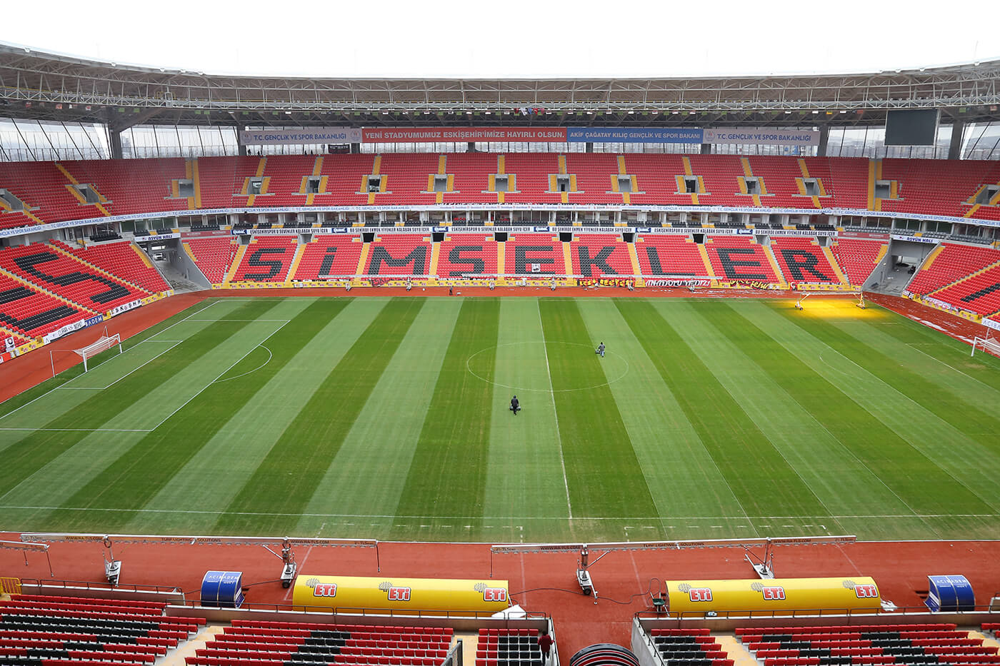
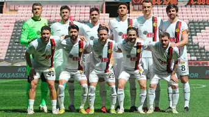
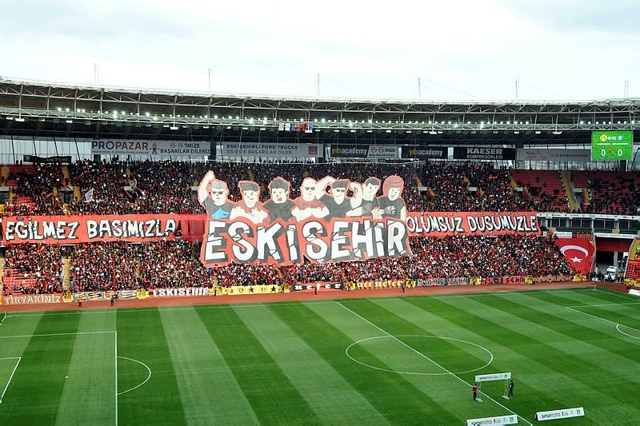

Eskişehirspor-Kırmızı Şimşekler
Eskişehirspor ya da halk arasındaki kısa adıyla Es-Es, 19 Haziran 1965 tarihinde Eskişehir'de kurulan ve bir dönem Süper Lig'de üst sıralarda mücadele etmiş, şu anda ise Bölgesel Amatör Lig'de yer alan Türk spor kulübü. Toplam 6 kupa ile Türkiye'nin en çok kupaya sahip 5. takımı konumundadır. Türkiye'nin Eskişehir ilini temsil etmektedir. Eskişehirspor kulübü şehrin Akademi Gençlik, İdmanyurdu ve Yıldıztepe kulüplerinin birleşmesiyle kurulmuştur. Kulübün renkleri siyah kırmızıdır.



Eskişehirspor Marşı
Takım Kadrosu
Kaleci
- İhsan Turgut Kirveli
- Adem Ağaoğlu
- Erhan Aslan
- Alican Candemir
Defans
- Kaan Dorak
- Cihan Çimen
- Kaan Aşnaz
- Hayrettin Cengiz
- Erdin Üzer
- Beytullah Çamurlu
Orta Saha
- Abdulgani Demir
- Hasan Ulas Uygur
- Ferhat Kiraz
- Bedirhan Akcay
- Sezer Akyüz
- Berke Çelik
- Fatih Çakır
- Emirhan Recep
Forvet
- Kaan Gul
- Dogukan Unal
- Ahmet Barlas
- Metehan Toprak
- Hasan Alp Altınoluk
- Kerem Eryılmaz
Stadyum Özellikleri
- Kapasite: 34.930
- Açık Otopark: 1148 Araç
- Kapalı Otopark: 502 Araç
- Loca Sayısı: 54